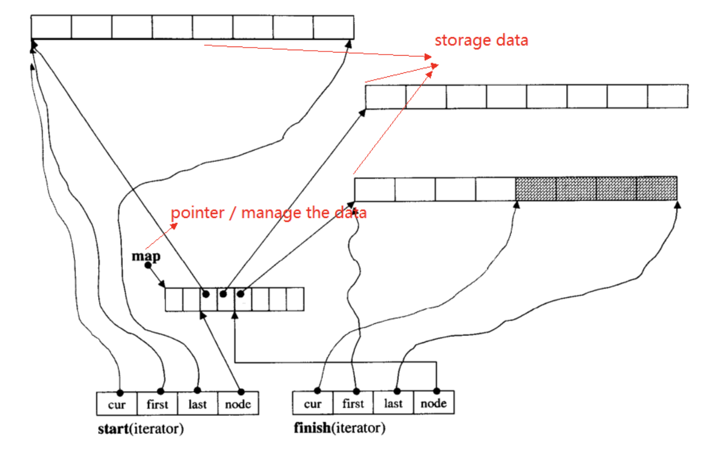

array,list,tree,stack,queue,hash table,set,map,
这些数据结构可以分为序列式(sequence)和关联式(associative)两种。
序列式容器中的元素都可序（ordered）但是未必有序(sorted)。其中stack和queue由deque实现。
RB_tree(non-public)
hashtable(non-standard)
vector 是动态空间，随着元素的增加，由内部机制自行扩容以容纳新元素。
底层实现为 双向链表 (double linked-list)， 插入和删除为常数时间
由list本身和list_node两部分构成。
list的插入操作（insert）和接合操作(splice)都不会造成原来的迭代器失效。相反的，vector的插入操作可能造成记忆体重新配置，导致原有的迭代器全部失效。list的删除操作只会导致被删除的迭代器失效，其他的迭代器不会受到任何影响。
底层实现为 单链表 (single linked-list)，具有单链表所具有的一切性质。
由slist本身和slist_node两部分构成。
deque是一种双向开口的连续线性空间，对于头和尾操作的效率很高。vector对于头的操作复杂很高，需要的代价也很高。

类似于循环数组，deque使用map<pointer>来维护指针指向线性空间。内存动态分配。如上图所示，每个chunk为一个vector，存储着具体的数据。每个chunk都由map hash来维护，来指向具体的chunk，每个chunk维护着cur，first，last，node指针。
stack 由底层容器实现工作（deque）。
queue 由底层容器实现工作 (deque) 。